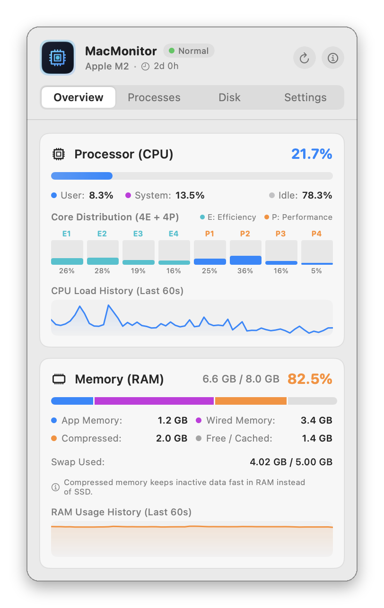
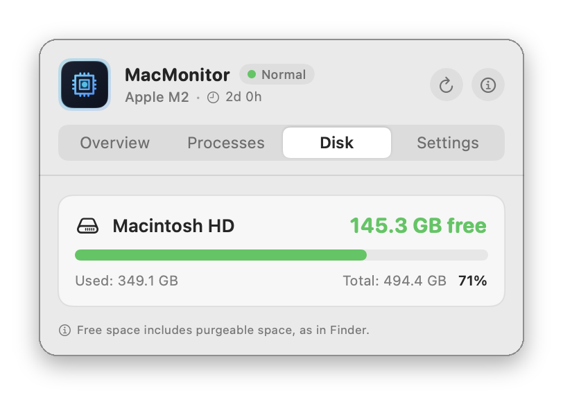
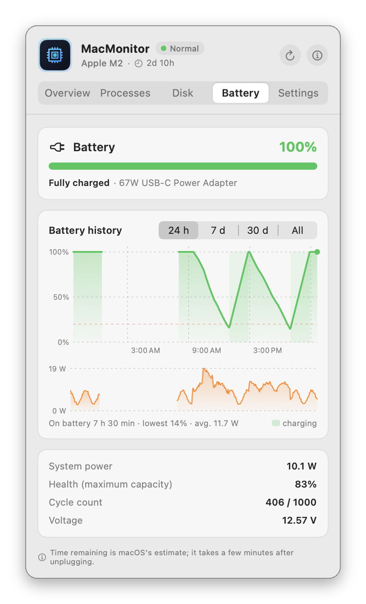

MacMonitor
Menu bar CPU, RAM, disk and battery monitor
MacMonitor is a free, open-source macOS menu bar app that shows live CPU and RAM usage, with per-core load, memory breakdown, top processes, free disk space and a long battery history one click away.
A lightweight, free alternative to iStat Menus, Stats and MenuMeters when you only need CPU, memory, disk and battery at a glance.
Download MacMonitor for macOS (pkg)
Full documentation · All releases · Source code: GitLab · GitHub
Features
- Live CPU and RAM percentages in the menu bar, refreshed every 0.5 to 5 seconds, in five styles
- Values turn red when CPU or RAM crosses your alert threshold
- Per-core load (efficiency and performance cores) and 60-second history graphs
- Memory split into App, Wired, Compressed and Free/Cached, as in Activity Monitor, plus swap
- Top six processes by CPU or memory
- Free, used and total space for every mounted disk, as Finder counts it
- Battery tab: charge, time remaining, power draw in watts, health and cycle count
- Battery history chart for 1 hour, 24 hours, 7 days, 30 days or 90 days, recorded once a minute; macOS shows only 24 hours
- About 0.1% CPU and 40 MB of memory with the panel closed; connects only for an optional daily update check
Screenshots




Frequently asked questions
Is MacMonitor free?
Yes. MacMonitor is free and open source under the GPL-3.0 license. There are no ads, no accounts and no in-app purchases, and it collects nothing; its only connection is the daily update check on GitLab, which you can turn off.
How do I see CPU and RAM usage in the Mac menu bar?
Install MacMonitor: CPU and RAM percentages appear in the menu bar right away and refresh every 0.5 to 5 seconds. Click them for per-core load, the memory breakdown and the processes using the most CPU or memory.
How do I check free disk space on my Mac?
Click MacMonitor in the menu bar and open the Disk tab. It shows free, used and total space for the startup disk and every external drive, calculated the same way as Finder.
How do I check my Mac's battery health and charge history?
Open MacMonitor's Battery tab. It shows the charge, time remaining, power draw, battery health (the same "Maximum Capacity" as System Settings) and cycle count, and a chart of the charge level and system power over the last hour, 24 hours, 7 days, 30 days or everything recorded. macOS itself only shows the last 24 hours.
Does MacMonitor keep a battery history when the panel is closed?
Yes. It records the battery once a minute while it runs and keeps 90 days, about 1 MB, in ~/Library/Application Support/MacMonitor on your Mac. Nothing is sent anywhere. The Battery tab only appears on Macs with a battery.
Does MacMonitor update itself?
Yes, from version 1.3.0. Once a day it looks for a new release on GitLab and shows what's new. If you choose Update Now, it downloads the update, checks its SHA-256 and signature, replaces itself and restarts, and your battery history is kept. No password is needed. You can skip a version, or turn the check off in Settings.
Will it slow down my Mac?
No. With the panel closed MacMonitor uses about 0.1% of total CPU and 40 MB of memory. It doesn't run shell commands such as top or ps, so it adds nothing to the system log.
How is it different from iStat Menus or Stats?
MacMonitor does less on purpose: CPU, memory, disk space, the battery and the top processes. It has no sensor, network or GPU graphs. If those essentials are all you want, it stays small and quiet.
Which Macs does it run on?
Apple Silicon and Intel Macs with macOS 13 Ventura or later.
Why does macOS block it the first time?
MacMonitor is not notarized by Apple, which needs a paid developer account. Allow it once in System Settings ▸ Privacy & Security ▸ Open Anyway; see First launch.
iStat Menus, Stats and MenuMeters are named only for comparison; MacMonitor is not affiliated with them.
Before you install
The apps are not notarized by Apple (that needs a paid developer account), so macOS blocks them the first time. Allow each app once in System Settings ▸ Privacy & Security ▸ Open Anyway. Every release lists a SHA-256 checksum.